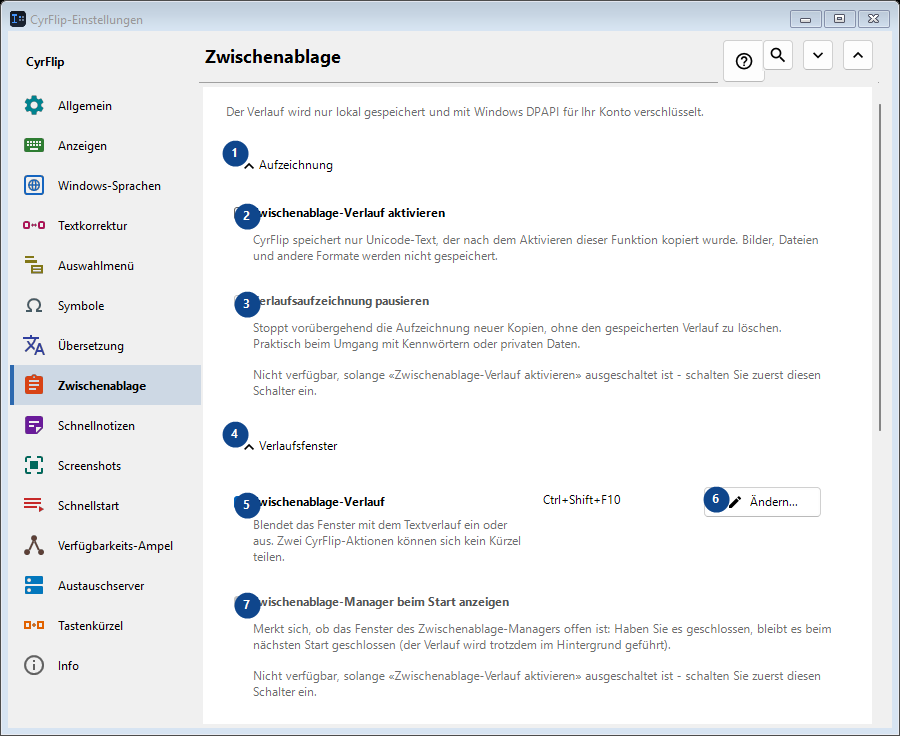
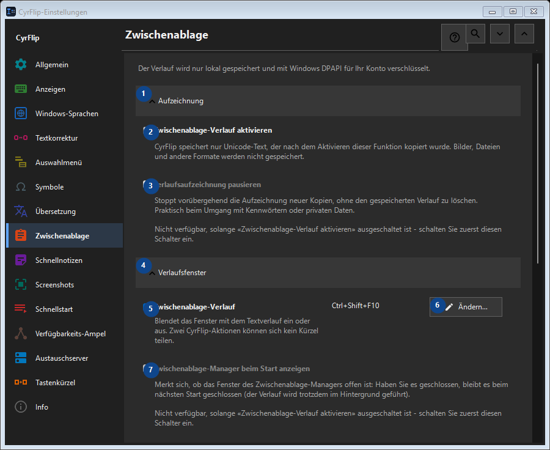

Zwischenablage
Zweck
Der Verlauf wird nur lokal gespeichert und mit Windows DPAPI für Ihr Konto verschlüsselt.


Reihenfolge
Einstellungen gelten sofort. Eine feste Reihenfolge ist nicht nötig; nutzen Sie die Gruppen unten.
Elemente
1. Aufzeichnung
Nutzen Sie diesen Befehl für die genannte Aktion. Lesen Sie eine Bestätigung, bevor Sie zustimmen.
Ihre Tastenkürzel2. Zwischenablage-Verlauf aktivieren
CyrFlip speichert nur Unicode-Text, der nach dem Aktivieren dieser Funktion kopiert wurde. Bilder, Dateien und andere Formate werden nicht gespeichert.
Ihre Tastenkürzel3. Verlaufsaufzeichnung pausieren
Nicht verfügbar, solange «Zwischenablage-Verlauf aktivieren» ausgeschaltet ist - schalten Sie zuerst diesen Schalter ein. Dieses Element ist derzeit nicht verfügbar. Aktivieren Sie zuerst die Funktion oder wählen Sie einen Eintrag.
Ihre Tastenkürzel4. Verlaufsfenster
Nutzen Sie diesen Befehl für die genannte Aktion. Lesen Sie eine Bestätigung, bevor Sie zustimmen.
Ihre Tastenkürzel5. Zwischenablage-Verlauf
Blendet das Fenster mit dem Textverlauf ein oder aus. Zwei CyrFlip-Aktionen können sich kein Kürzel teilen.
Ihre Tastenkürzel6. Ändern - Zwischenablage-Verlauf
Nutzen Sie diesen Befehl für die genannte Aktion. Lesen Sie eine Bestätigung, bevor Sie zustimmen.
Ihre Tastenkürzel7. Zwischenablage-Manager beim Start anzeigen
Nicht verfügbar, solange «Zwischenablage-Verlauf aktivieren» ausgeschaltet ist - schalten Sie zuerst diesen Schalter ein. Dieses Element ist derzeit nicht verfügbar. Aktivieren Sie zuerst die Funktion oder wählen Sie einen Eintrag.
Ihre Tastenkürzel8. Transparenz des Verlaufsfensters
Nicht verfügbar, solange «Zwischenablage-Verlauf aktivieren» ausgeschaltet ist - schalten Sie zuerst diesen Schalter ein. Dieses Element ist derzeit nicht verfügbar. Aktivieren Sie zuerst die Funktion oder wählen Sie einen Eintrag.
Ihre Tastenkürzel9. Verlauf durchsuchen
Öffnet ein eigenes Fenster für die Suche nach einem Textausschnitt. Geben Sie mindestens drei Zeichen ein.
Ihre Tastenkürzel10. Löschen
Nutzen Sie diesen Befehl für die genannte Aktion. Lesen Sie eine Bestätigung, bevor Sie zustimmen.
Ihre Tastenkürzel11. Gesamten Verlauf löschen
Löscht alle Einträge aus dem Speicher und der verschlüsselten lokalen Datei. Das lässt sich nicht rückgängig machen.
Ihre Tastenkürzel12. Auf einen anderen Computer übertragen
Nutzen Sie diesen Befehl für die genannte Aktion. Lesen Sie eine Bestätigung, bevor Sie zustimmen.
Ihre Tastenkürzel13. Exportieren...
Eine offene Textdatei mit Ihren Notizen und dem gewählten Zwischenablage-Verlauf: in jedem Editor oder auf dem Handy lesbar und auf einem anderen Computer in CyrFlip importierbar. Die Datei wird nicht verschlüsselt. Der Import zeigt, was hinzugefügt wird, und löscht nichts.
Ihre Tastenkürzel14. Importieren...
Nutzen Sie diesen Befehl für die genannte Aktion. Lesen Sie eine Bestätigung, bevor Sie zustimmen.
Ihre Tastenkürzel